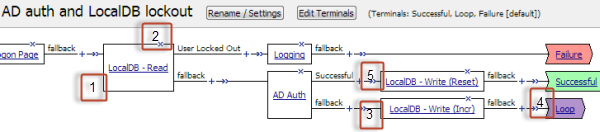
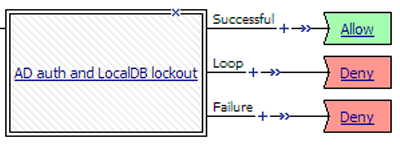
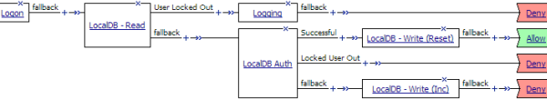
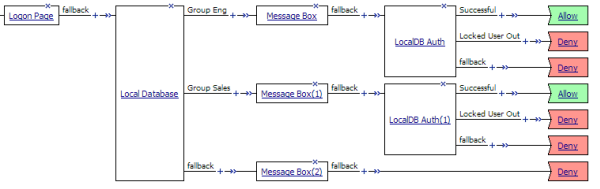

Updated Date: 07/07/2026
Local User Database
You can create multiple local user databases to provide on-box authentication, to control user access, to segment your users, and to store user information.
During access policy operation, you can read from and write to a local user database.
-
You can read from a local user database to:
-
Determine whether a user is locked out of a local user database instance.
-
Check the number of failed login attempts for a user.
-
Check group membership for the user to determine which access policy branch to take.
Note: Groups are text strings. You create them from the Configuration utility.
-
-
You can write to a local user database primarily to increment or reset the number of login failures for a user. You can also update the locked out status for the user; although this option provides flexibility, use it sparingly. Normally, locked out status is set programmatically.
You can export user data from a local user database instance to a comma-separated values (CSV) file. The purpose is to provide you with a way to back up user data, which you can import from the CSV file.
Note: Dynamically created users are not included in the CSV file that you export to back up user data. (You can configure the Local Database action to dynamically create users from an access policy.)
When BIG-IP systems are included in a Sync-Failover device group, configuration data is synchronized automatically or manually using ConfigSync. ConfigSync has no effect on local user databases, however.
For local user database data to be synchronized across devices, the devices must be included in a Sync-Failover device group. In a Sync-Failover device group, the active node provides the local user database data to the other nodes initially, and then provides updated data every five minutes.
The date and time of the last high availability (HA) synchronization displays in the Configuration utility on the Local User List and Local Database Instance screens. If errors occur, they are logged and then available in Access Policy Manager reports.
Administrators can use the Configuration utility to update user data in a local database instance. A Local Database action in an access policy can be configured to update user data also. When this is the case, the act of changing user data from the Configuration utility can prevent an access policy from functioning correctly, that is, the access policy might fail to lock users out.
Depending on how a Local Database action is configured, it can modify the number of login failures and the locked out status for a given user. For a user that is not found in the local database, the Local Database action can dynamically create a user record and use it to lock the user out. To keep the user locked out, the user record must be retained for the lockout interval. (Dynamically created users are deleted automatically after a configurable period of time.)
Note: The Local Database action can write not only to a local user database in the partition where the access policy was created, but to a local user database in the Common partition. (Usually, access to the Common partition from any other partition is read-only.)
Configure a local user database instance so you can add users and user data to it.
-
On the Main tab, select Access > Authentication > Local User DB > Instances.
The Instances screen displays.
-
Click Create New Instance.
The Create New Local User DB Instance popup screen displays.
-
In the Name field, type a unique name for the database instance.
-
In the Lockout Interval (in seconds) field, type the number of seconds to keep a user account locked.
The default setting is 600 seconds.
Note: Access Policy Manager (APM) unlocks the user account after the interval completes; however, this does not occur immediately. The actual duration varies depending on the workload on the process that unlocks the user account.
-
In the Lockout Threshold field, type the maximum number of login failures to allow.
The default setting is 3.
-
In the Dynamic User Remove Interval (in seconds) field, type the number of seconds to keep a user account locked.
The default setting is 1800 seconds.
Note: APM deletes the dynamic user after the interval completes; however, this does not occur immediately. The actual duration varies depending on the workload on the process that deletes the user.
-
Click OK.
You have created a local user database instance.
Before you start this procedure, a local user database instance must already exist.
Add a user to a local user database instance for authentication or for determining a branching strategy in an access policy that is based on user group membership.
Note: The data in a local user database is not validated against external sources.
-
On the Main tab, select Access > Authentication > Local User DB > Users.
The Users screen displays.
-
Click Create New User.
The Create New Local User screen opens and displays User Information settings.
-
In the User Name field, type the user name.
-
In the Password and Confirm Password fields, type the user’s password.
-
Select the Force Password Change check box to force the user to change password the next time they log in.
After the user successfully changes password, this check box is cleared. You can select this check box at any time to force the user to change password at their next log in.
-
From the Instance list, select a local user database instance.
You have completed the mandatory settings.
-
Select Personal Information to specify First Name, Last Name, and Email.
This information is not accessible to an access policy.
-
Select User Groups to specify Group Memberships for the user.
A group membership is a text string.
A Local Database action can read groups from the database to determine branching strategy in an access policy.
-
Click OK.
You have created a local user in a local user database instance.
To add this user to another local user database instance, repeat this procedure and select the other instance.
You can force a user to change password for the local user database instance when you need to do so.
-
On the Main tab, select Access > Authentication > Local User DB > Users.
The Users screen displays.
-
Select a user and click Edit.
The Edit Local User screen opens and displays User Information settings.
-
Select the Force Password Change check box.
You can select this check box at any time to force the user to change a password at their next log in.
-
Click OK.
The screen closes.
The user is prompted to change a password the next time they log in. After the user successfully changes a password, the Force Password Change check box is cleared.
You can authenticate users directly against a local user database using the Local DB Auth action from an access policy.
Furthermore, you can use the local database to count login failures by users, whether or not they are found in a user database, and locking them out for a period of time. (This is possible whether authentication occurs against an external AAA server, or a local user database.) You can accomplish these tasks by using the BIG-IP system’s Local Database actions to read and write information from an access policy.
-
Authenticating users and locking them out with a local database
-
Unlocking a user who is locked out of a local user database instance
A macro, AD auth and LocalDB lockout, is available in the visual policy editor and provides a good example of using the Local Database action to lock users out of an external AAA server.

-
A local database action (LocalDB - Read) reads the locked_out database property and determines whether the user is locked out.
-
Exiting the LocalDB - Read action on the User Locked Out branch leads to a logging action and a Failure terminal.
-
If the login (AD Auth) fails, a local database write action (LocalDB - Write (Incr)) increments the number of login failures by 1.
Note: To keep actual logon attempts aligned with the number recorded by the LocalDB - Write (Incr) action (incrementing by 1), the Max Logon Attempts Allowed property in the AD Auth action is set to 1. If it was set to another number, for example 2, you would need to configure the LocalDB - Write (Incr) action to increment login failures by the same number, 2.
-
A Loop terminal in the macro causes the macro to loop through the AD Auth and LocalDB - Write (Incr) actions until authentication succeeds or until the maximum number of logon attempts is surpassed and the macro exits through the Loop terminal.
-
If the login, AD Auth, succeeds, a Local Database write action, LocalDB - Write (Reset), resets the user’s login failures to 0 (zero).

In an access policy, three branches follow the macro:
- Successful: The user logged in successfully.
- Loop: The user failed to log in the maximum number of times and is locked out now.
- Failure: The user is locked out and does not get another chance to try to log in.
Administrators can use the Configuration utility to update user data in a local database instance. A Local Database action in an access policy can be configured to update user data also. When this is the case, the act of changing user data from the Configuration utility can prevent an access policy from functioning correctly, that is, the access policy might fail to lock users out.
Depending on how a Local Database action is configured, it can modify the number of login failures and the locked out status for a given user. For a user that is not found in the local database, the Local Database action can dynamically create a user record and use it to lock the user out. To keep the user locked out, the user record must be retained for the lockout interval. (Dynamically created users are deleted automatically after a configurable period of time.)
Note: The Local Database action can write not only to a local user database in the partition where the access policy was created, but to a local user database in the Common partition. (Usually, access to the Common partition from any other partition is read-only.)
Before you start this task: create a local user database instance in Access Policy Manager, add users to the local database instance, and then create an access profile.
Authenticate a user against a local user database when an external AAA server is not available. Read and write to a local user database when you want to track failed login attempts and lock out users that repeatedly attempt and fail to log in.
Note: For enhanced security, F5 recommends that you place Local Database actions before and after a LocalDB Auth action to read and write user information. This enables you to track and block login attempts by any user. This process is demonstrated in the example access policy described here. (You can use this same process to lock users out of an AAA server by substituting another authentication action for the LocalDB Auth action.)
-
On the Main tab, click Access > Profiles / Policies.
The Access Profiles (Per-Session Policies) screen opens.
-
In the Per-Session Policy column, click the Edit link for the access profile you want to configure.
The visual policy editor opens the access policy in a separate screen.
-
On a policy branch, click the (+) icon to add an item to the policy.
Repeat this action from the visual policy editor whenever you want to add an item to the policy.
A popup screen displays actions on tabs, such as General Purpose and Authentication, and provides a search field.
-
On the selection screen, type
logonin the search field, select Logon Page from the results, and select Add Item.A logon page should precede other actions in the access policy.
Note: A locked out user is not presented with a logon page, regardless of how many authentication attempts are allowed.
-
Make any changes that you require to the logon page properties and click Save.
The properties screen closes and the policy displays.
-
On the fallback branch after the previous action, click the (+) icon to add an item to the policy.
A popup screen opens.
-
Add a Local Database action and configure it to read the user’s locked out status, and create a branch for a locked out user.
-
Type
localin the search field.Search is not case-sensitive.
A list of matching actions displays.
-
Select Local Database and click Add Item.
A properties screen opens.
-
From the LocalDB Instance list, select a local user database.
-
In the User Name field, retain the default session variable or type another variable name or a user name.
-
Click Add new entry
A new line is added to the list of entries with the Action set to Read and other default settings.
-
In the Destination column Session Variable field, type
session.localdb.locked_out(or type the name of another variable). -
In the Source column from the DB Property list, select locked_out.
The entry is complete. A read action reads a value from the database into a session variable.
-
Click the Branch Rules tab.
-
Click Add Branch Rule.
A new entry with Name and Expression settings displays.
-
In the Name field, replace the default name by typing a new name.
The name appears on the branch in the policy.
-
Click the change link next to the Expression setting.
A popup screen opens.
-
Click the Add Expression button.
Settings are displayed.
-
From the Agent Sel. list select LocalDB.
The Condition list displays LocalDB Auth Passed. The LocalDB Auth Passed list displays Passed.
-
From the LocalDB Auth Passed list, select Locked User Out.
The branch rule is complete.
-
Click Finished.
The popup screen closes.
-
Click Save.
The properties screen closes and the policy displays.
-
-
On the fallback branch after the previous action , add a LocalDB Auth action and configure properties for it.
Valid values for the properties, LocalDB Instance and Max Logon Attempts Allowed, are available from lists.
Note: A user that accumulates the maximum number of logon failures specified in the LocalDB Auth action is locked out of the local user database instance and exits the action on a Locked User Out branch. A user that is not found in the local user database exits the action to the fallback branch.
-
On the fallback branch after the previous action, click the (+) icon to add an item to the policy.
A popup screen opens.
-
Add a Local Database action to to increment and write login failures. Configure it to allow user creation.
-
Set the LocalDB Instance and User Name fields to the same values you selected previously.
-
From the Allow User Creation list, select Yes.
At each subsequent login attempt, login failures increase until the user is eventually locked out.
-
Add a new entry and configure it to read the login_failures DB property into a session variable.
-
Add a new entry and configure it to write the value of an expression that increments the number of failures into the login_failures DB property.
Here is an example of the expression:
expr { [mcget {session.localdb.login_failures}] + 1 }.
-
-
On the successful branch after the Local DB Auth action, add a Local Database action and configure it to reset login failures to 0 (zero).
-
Set the LocalDB Instance and User Name fields to the same values you selected previously.
-
Add a new entry and configure it to write the value of an expression that evaluates to zero into the login_failures DB property.
Here is an example of the expression:
expr { "0" }.
-
-
Click Save.
The properties screen closes and the policy displays.
-
Click the Apply Access Policy link to apply and activate the changes to the policy.

To apply this access policy to network traffic, add the access profile to a virtual server.
Note: To ensure that logging is configured to meet your requirements, verify the log settings for the access profile.
You can unlock a user who is locked out of a local user database instance if you do not want to wait the for lockout interval to elapse.
Note: The lockout interval is configurable and can be different for each local user database instance.
-
On the Main tab, select Access > Authentication > Local User DB > Users.
The Users screen displays.
-
Select a user for whom the Locked Out column specifies yes.
-
Click Unlock User.
The account is unlocked in the local user database instance.
You can store user group membership strings in a local user database instance. You can add one or more strings for a user to the database. The strings can reflect any grouping strategy that you want to apply. You can make user group-based branching decisions in an access policy by reading the group information for the user from the database, and creating rules for branching based on it.
Before you can perform this task, you need users and user group membership strings configured in a local user database instance. You also need an access profile.
You can use an access policy to retrieve user group membership from a local user database instance and configure branch rules to provide different actions for users in different groups.
-
On the Main tab, click Access > Profiles / Policies.
The Access Profiles (Per-Session Policies) screen opens.
-
In the Per-Session Policy column, click the Edit link for the access profile you want to configure.
The visual policy editor opens the access policy in a separate screen.
-
On a policy branch, click the (+) icon to add an item to the policy.
Repeat this action from the visual policy editor whenever you want to add an item to the policy.
A popup screen displays actions on tabs, such as General Purpose and Authentication, and provides a search field.
-
Type
localin the search field.Search is not case-sensitive.
A list of matching actions is displayed.
-
Select Local Database and click Add Item.
A properties screen displays.
-
From the LocalDB Instance list, select a local user database.
-
In the User Name field, retain the default session variable or type another variable name or a user name.
-
From the Allow User Creation list, retain the default value (No).
-
Click Add new entry.
A new line is added to the list of entries.
-
Configure the entry to read the groups from the database and store them in a variable:
-
From the Action list, select Read.
-
In the Source column from the DB Property list, select groups.
-
In the Destination columnSession Variable field, retain the default value, session.localdb.groups or type the name of a variable.
-
In the Source column from the DB Property list, select groups.
You have configured an action that reads the user’s groups into a variable.
-
-
Click the Branch Rules tab to edit a branch rule.
-
Click the Add Branch Rule button.
New Name and Expression settings display.
-
In the Name field, replace the default name by typing a new name over it.
The default name is Branch Rule n where n is a number. The name appears on the branch in the policy and so should be descriptive.
-
Click the change link in the Expression area.
A popup screen opens.
-
Click the Advanced tab.
Use this tab to enter Tcl expressions.
A text input field displays.
-
Type an expression into the text input field.
If you expect groups to include only one entry, you can type an expression similar to this one.
expr { [mcget {**session.localdb.groups**}] eq "eng" }If you expect groups to include multiple entries, you can type an expression similar to this one
expr { [mcget {**session.localdb.groups**}] contains "sales" } -
Click Finished.
The popup screen closes.
-
Add more branch rules to provide branches for different user groups.
-
Click Save.
The properties screen closes and the policy displays.
-
Add any other branches and actions that you need to complete the policy.
When the access policy runs and takes the branch with the Local Database read action, additional branching is done based on group membership.

Confirm that the correct log settings are selected for the access profile to ensure that events are logged as you intend.
Note: Log settings are configured in the Access > Overview > Event Log > Settings area of the product. They enable and disable logging for access system and URL request filtering events. Log settings also specify log publishers that send log messages to specified destinations.
-
On the Main tab, click Access > Profiles / Policies.
The Access Profiles (Per-Session Policies) screen opens.
-
Click the name of the access profile that you want to edit.
The properties screen opens.
-
On the menu bar, click Logs.
The access profile log settings display.
-
Move log settings between the Available and Selected lists.
You can assign up to three log settings that enable access system logging to an access profile. You can assign additional log settings to an access profile provided that they enable logging for URl request logging only.
Note: Logging is disabled when the Selected list is empty.
-
Click Update.
An access profile is in effect when it is assigned to a virtual server.